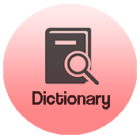

| Image |
Represent |
|  |
Enter dictionary page of 6 categories |
 |
Enter the learn words around page which acts like a gps whereby users can click on a location and know the history of some places or words around them |
|
Returns to Homepage |
 |
A tab where users can seek help from, see the credits of the application and give their feedbacks |
 |
For users to favourite the words that they might want to use in future |
 |
For users to listen to the prounounciation of the words in the application |
 |
When users clicked on the words on the wordlist page, definition of the words can be found. |